На каждой карточке — фрагмент метрической книги или ревизской сказки. Красным выделено то, что нужно прочитать. Пожалуйста, пишите дословно, как в документе (с ѣ, і, ъ), непонятные буквы отмечайте «?», не угадывайте по смыслу. Нажмите на картинку, чтобы открыть её крупно. Ответы сохраняются в браузере; кнопка внизу копирует их все для отправки.
Записи 01–11 — уменьшенная копия с сайта архива, лучшего качества пока нет.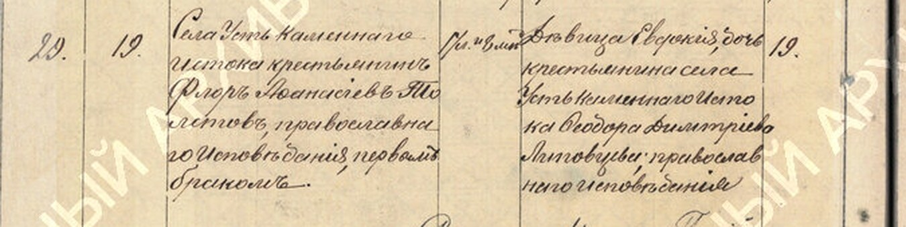
Брак №29, 19.04.1900. Невеста: дѣвица Евдокія, дочь крестьянина Ѳеодора Дмитріева Липовцева, лѣтъ 19?
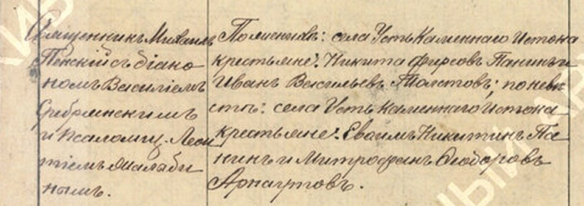
Поручители к браку №29: прочитать все имена; среди них Иванъ Васильевъ Толстовъ?
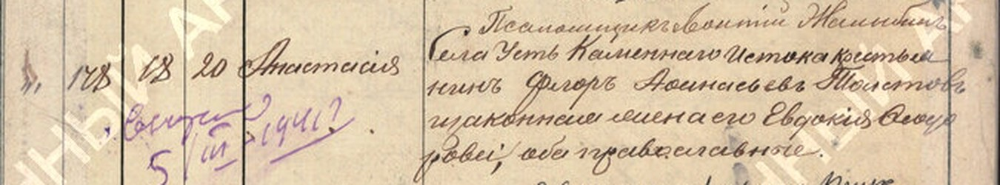
Рожд. №178 Анастасія, 18.12.1900. Мать: законная жена его Евдокія Ѳеодорова / Ѳеодоровна? · пометка на полях: …5/III 1941?
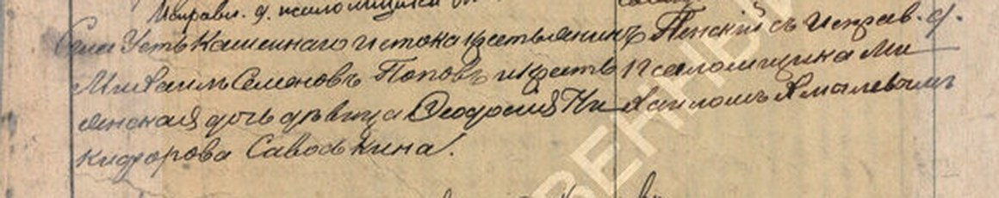
Рожд. №37 Онисимъ, 1904. Восприемники: Михаилъ Семеновъ Поповъ и дѣвица Евдокія (или Ѳеодосія?) Никифорова Савоськина
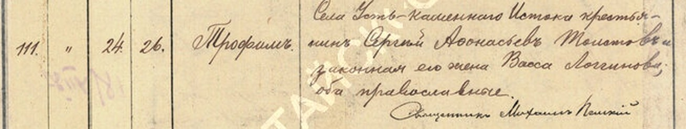
Рожд. №111 Трофимъ, 1905. Отец: крестьянинъ Сергій? Аѳонасьевъ Толстовъ (имя отца — Сергій или иное?)
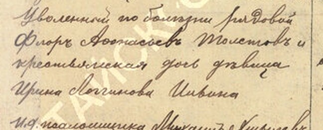
Восприемники Трофима: Уволенный по болѣзни рядовой Флоръ Аѳонасьевъ Толстовъ и дѣвица Ирина Логгинова Ильина?
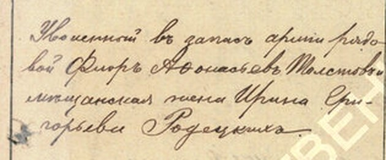
Рожд. №53, 1906. Восприемник: Уволенный въ запасъ арміи рядовой Флоръ Аѳонасьевъ Толстовъ?
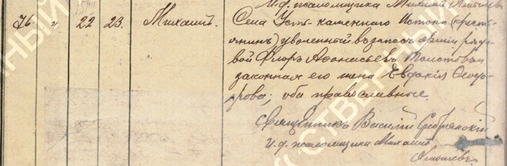
Рожд. №76 Михаилъ, 1906. Отец: уволенный / уволенной? въ запасъ арміи рядовой Флоръ Аѳонасьевъ Толстовъ; мать Евдокія Ѳеодорова
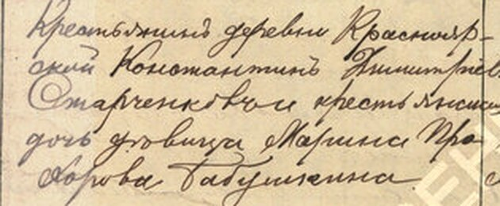
Восприемники Михаила: Константинъ Дмитріевъ Старченковъ? и дѣвица Марина Прохорова Бабушкина?
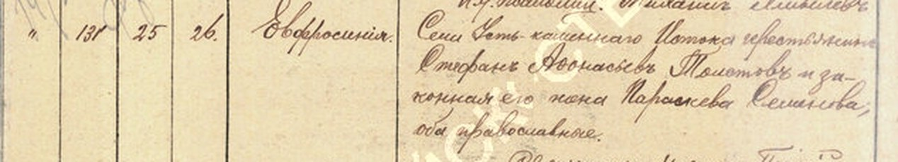
Рожд. №131 Евфросинія, 1906. Отец: Стефанъ Аѳонасьевъ Толстовъ?, мать Параскева Семенова?
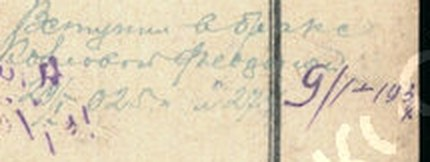
Пометка на полях (Іаковъ, 1906): вступил в бракъ ок. 1925 съ Февроньей — фамилия?
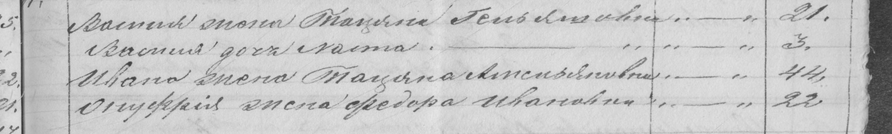
Ревизия 1851, Шипки, двор №4. Стр.1: Василья жена Тацяна …вна (отчество?), 21 · Стр.2: Василья дочь (имя?), 3 · Стр.3: Ивана жена Тацяна Амельяновна?, 44
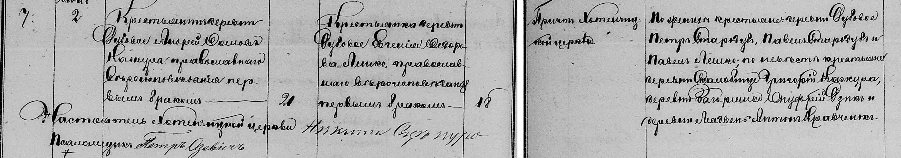
Хотенчицы, брак №7, 2.06.1886. Деревня Дубовое?; женихъ Андрей Ѳомовъ Кожура / Кажура?; невѣста Евгенія Ѳедорова Лешко; поручители по невѣстѣ: деревни и имена (Скалобище? Загоряне? Лядени? Онуфрій Дзыхъ?)
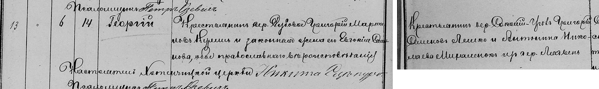
Хотенчицы, рожд. №13, 1886. Восприемник Григорій Семеновъ Лешко — из какой деревни?
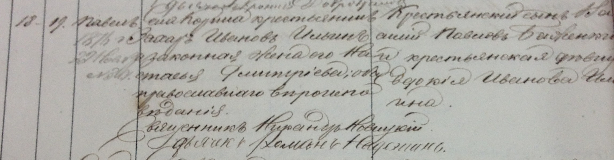
Корино, рожд. №11, 1870. Родители: Захаръ Ивановъ Ильинъ и Настасья Димитріева?; восприемница дѣвица Евдокія Иванова Ильина?
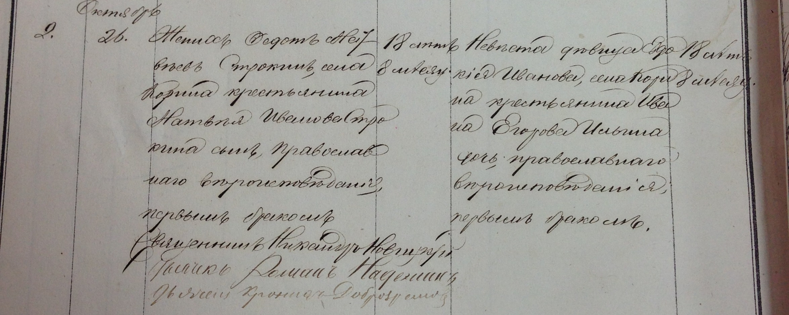
Корино, брак №2, 26.10.1870. Невѣста дѣвица Евдокія Иванова, крестьянина Ивана Егорова Ильина дочь?; женихъ Ѳедотъ Матвѣевъ Строкинъ?
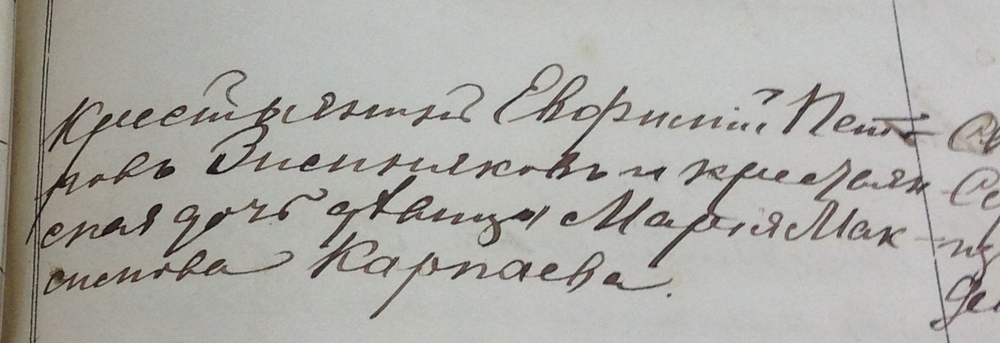
Кардавиль. Восприемница дѣвица Марія Максимова Карпаева или Кирпаева?
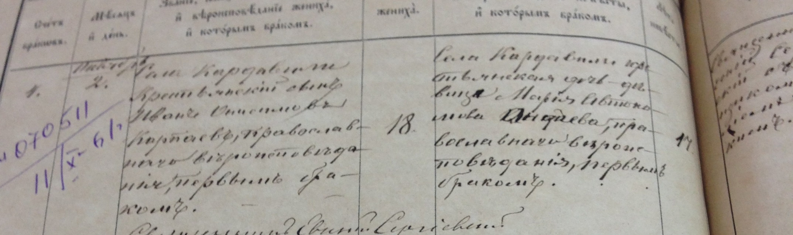
Кардавиль. Бракъ Ивана Онисимова Карпаева: фамилия и деревня невѣсты?
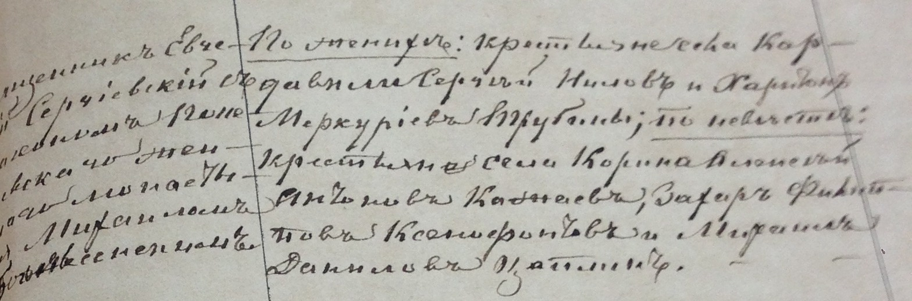
Кардавиль, тот же бракъ — поручители: имена и сёла (среди них Алексѣй Антоновъ Кажаевъ, с. Корино?)